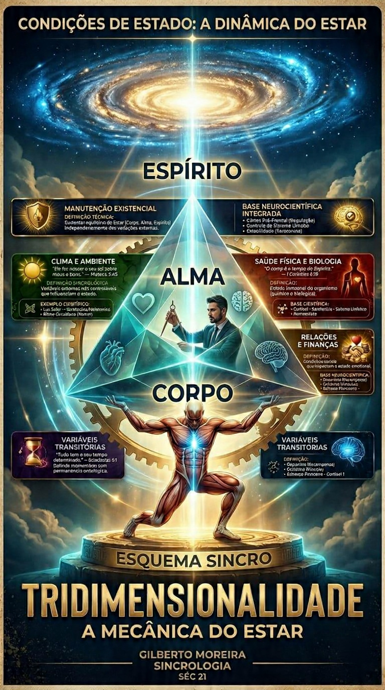

Modelo Operacional Integrado
A Tridimensionalidade estabelece que o ser humano opera através de três dimensões integradas: Corpo (Hardware/Execução), Alma (Software/Processamento) e Espírito (Direção/Energia). A saúde do "Estar" depende da hierarquia correta: O Espírito governa, a Alma organiza e o Corpo responde.

Através de intervenções técnicas como o Jejum (reset biológico e dopaminérgico) e a Oração (coerência neural e alinhamento espiritual), o formando aprende a restaurar a autoridade do sistema sobre o ruído existencial.